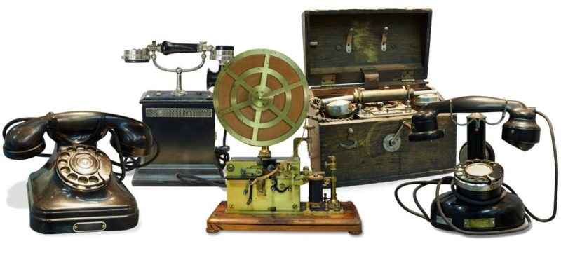

Telecomunicaciones
Emisión, transmisión y recepción de información por hilo,
radioelectricidad, medios ópticos u otros sistemas electromagnéticos.
Los ingenieros de telecomunicaciones son expertos en tecnología de
las comunicaciones. Se encargan del diseño, investigación y desarrollo
de sistemas de comunicaciones por cable y satélite, teléfonos móviles,
ondas de radio, Internet y correo electrónico.
Historia de las telecomunicaciones
El ser humano ha intentado superar las distancias para enviar y recibir
señales desde épocas muy tempranas. Para ello empleaba señales de humo,
sonidos instrumentales, mensajeros humanos o cadenas de señales de fuego.
Sin embargo, recién con la aparición del correo postal en sus distintas versiones,
algunas más antiguas que otras, apareció un verdadero sistema de comunicaciones a
la distancia. Generalmente estaba dirigido a comunicar al rey o a la metrópoli imperial,
con sus súbditos lejanos o con sus territorios coloniales.

Por su parte, los primeros sistemas de comunicación rápida a distancia se crearon
en
la Edad Moderna, cuando gracias al dominio de la electricidad, surgió el modo de emplearla
para transmitir mensajes simples, limitados generalmente a una palabra, mediante el telégrafo.
Tipos de telecomunicaciones
Hay muchas formas de clasificar las telecomunicaciones, atendiendo a distintos
elementos.
Por ejemplo, podemos distinguir entre comunicaciones unidireccionales, aquellas en las
que el emisor es siempre emisor, y las bidireccionales, en las que los receptores eventualmente
ocupan también el rol de emisor, es decir, existe retroalimentación.
Por otro lado, atendiendo a la naturaleza de su tecnología específica, podemos diferenciar entre:
- Radiocomunicaciones.
- Telefonía.
- Televisión.
- Internet.
- Fax.
Historia de las telecomunicaciones
Carrera en telecomunicaciones
El estudio de las telecomunicaciones se lleva a cabo desde muy distintos
enfoques, cada uno representado en una carrera universitaria o un grado similar,
lo cual abarca títulos tan distintos como son, entre otras:
Ingeniería en telecomunicaciones.
Desarrollador Web.
Tecnicatura superior en redes informáticas.
Tecnicatura universitaria en telecomunicaciones.
El estudio de telecomunicaciones tiene un claro perfil tecnológico, orientado
a la ciencia aplicada y a la ingeniería electrónica, industrial y de materiales.